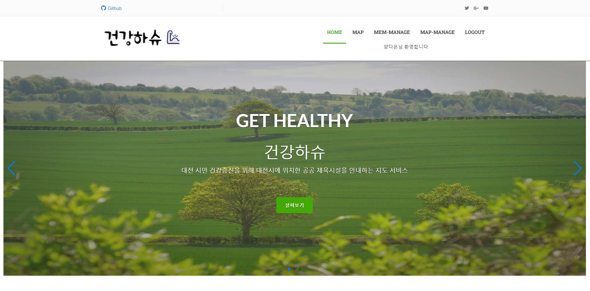

공공체육시설 위치 안내 서비스
개요
팀프로젝트인 건강하슈는 대전시의 공공체육시설의 위치와 정보를 확인할 수 있는 프로그램입니다.
공공체육시설을 일일히 검색해야 하는 번거로움을 개선하고자 프로그램을 제작했습니다.
경험 정리
• 개발기간은 2022년 06월 28일부터 2022년 07월 11일까지 약 3주간 진행했습니다.
• 개발 인원은 총 3명이고 팀원 전원이 백엔드, 프론트를 담당하여 사이트를 제작했습니다. 그 중 지도 페이지의 api 데이터 관리를 중점적으로 담당했습니다.
※ 해당 프로젝트는 건강하슈 홈페이지에서 확인할 수 있으며(계정 : 양다은, 123), 프로젝트 소스는 건강하슈 깃허브에서 확인할 수 있습니다.
느낀점
• git으로 프로젝트를 관리하며 개인프로젝트때 느끼지 못한 commit merge 이슈를 경험함 • 팀원 소통 중요성 느낌 • 데이터마다 비교 가능/불가능이 있는점, 다른 데이터 형식으로 변환이 가능한 점
•
보안점
• spring 라이브러리를 이용한 데이터 가공을 못해본거 • 코드를 좀 더 간결하게 짜는 법
•
Technologies:
- - HTML5&CSS5
- - JavaScript
- - jQuery
- - AJAX
- - Git
- - Restful API
- - Spring Boot(2.6.7v)
- - Spring Security
- - Spring poi
- - JAVA(12.0.2v)
- - MySQL
- - Mybatis
- - Gradle
- - JSP&JSTL
- - Eclipse
- - VSCode
- - AWS EC2(CentOS)
- - AWS RDS(MySQL)
- - KAKAO MAP API
- - OPEN Data API
- - Geolocation GPS
- - NOTION
건강하슈 메인페이지
• 메인 페이지에서 로그인을 해야만 지도 페이지로 넘어갈 수 있게 구현했습니다.Entity Relationship Diagram
• 사이트 개발 전 DB모델링을 통해 객체간의 관계를 파악했습니다.지도 페이지
• 사이트 개발 전 DB모델링을 통해 객체간의 관계를 파악했습니다.Entity Relationship Diagram
• 사이트 개발 전 DB모델링을 통해 객체간의 관계를 파악했습니다.Entity Relationship Diagram
• 사이트 개발 전 DB모델링을 통해 객체간의 관계를 파악했습니다.
개발 일정 그래프
• 사이트 개발 전 DB모델링을 통해 객체간의 관계를 파악했습니다.
프로젝트 협업 툴
• 사이트 개발 전 DB모델링을 통해 객체간의 관계를 파악했습니다.